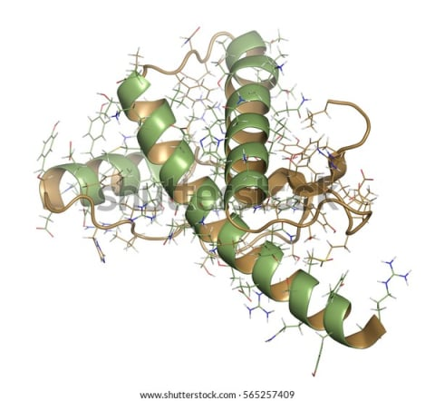
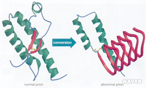
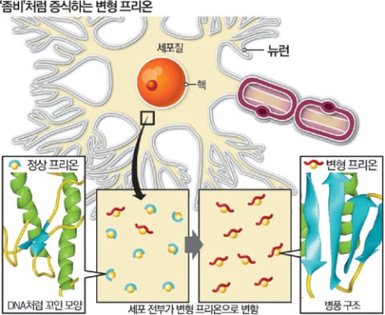
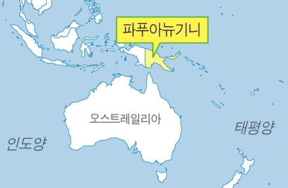

■정치 관련 아예 없이 그저 신기한 생물 지식을 쓴 글임.■
필자 정치에 관심 진짜 하나도 없음.
◆댓글에서도 정치 이야기는 자제 부탁. 이 글과 관련없음.◆
어 형이다
니들 혹시 프리온이라고 들어봤냐?
이새끼는 감염되면 치사율 100%인 단백질인데,
형이 이 씹새끼에 대해 쉽게 정리했으니 바로 가보자.
1. 그래서 그게 뭔데?
너희들, ^병 옮기는 거^ 하면 보통 세균, 바이러스 떠오르지?
근데 걔네는 최소한 DNA나 RNA라도 있어.
전염하려면 유전정보를 가지는게 당연한건 상식이야.

근데 프리온 이 씹새끼는 유전정보도 없는
순수한 무생물인 주제에
자가 증식을 하는 되게 신기한 새끼야.
그냥 단백질 덩어리인데, 한번 걸리면
치료법도 없고 치사율 100%로 뇌가 녹아서 죽어버려.

2. 대체 원리가 뭐임?
느그 뇌에는 원래 프리온 단백질(PrP)이라는
착한 건실 정상 단백질이 있거든?
문제는 이게 가끔 모양이 잘못 접힌 불량품으로 변해.
진짜 무서운 건 그다음인데
불량 프리온이 옆에 있는 정상 프리온을 건드리잖아?

그러면 정상 애도 똑같이 잘못 접혀 같은 좆병신이 됨.
그러면서 불량품이 2개, 4개, 8개 되면서
무한으로 즐기게 되는거야.
단백질 하나가 주변을 자기 모양으로 복사해 나가는거지.
이렇게 쌓인 병신 단백질 때문에 뇌세포가 죽어나가서
나중엔 뇌가 현미경으로 보면 똥구멍 여러개 생겨난거마냥
구멍이 숭숭 뚫려서 죽게 됨.
이런걸 "해면상 뇌병증"이라고 불러.
재미없다고? 그럼비유를 들어줄게.
밥먹고 있다면 미안하다.
평소에 개꼴리는 짤만 모이는 곳이 있다고 하자.
근데 분탕충이 하나 들어와서 똥 사진을 올렸어.
근데 이 혐짤 똥 사진을 보고 경악하는 반응이 맘에 들어버린
정상인이 점점 똥구멍충으로 변해버린거야.
그리고 이것이 반복돼.

그렇게 꼴리는 것들이 올라와야할 곳에는
똥 사진만 존나 올라오게 돼버리고
그리고 결국 그 곳은 잠식당하고 망하게 되버렸어.
(내가 아는 사람 이야기임)
3. 걍 고열 처리하면 괜찮은거 아님?
세균, 바이러스는 보통 끓이면 끝나.
근데 프리온은 존나 끈질긴 씹새끼이기 때문에
그 정도로는 확실히 안 없어짐.
원래 단백질이 아니라 이미 망가진 단백질이라서
열로 더 망가뜨려도 잘 안 죽는 느낌인거야.
그래서 프리온을 없앨려면
존나 높은 온도로 멸균하거나, 강력한 염기를 써야해.
4. 그래도 나는 안전한거 아님?
가장 흔한 프리온병은
산발성 크로이츠펠트-야콥병(CJD)인데,
특별한 원인 없이 "그냥" 생김.
발생률은 대략 1년에 100만 명당 1명 정도임.
아니면 감염된 뇌를 파먹어도 감염되는데

파푸아뉴기니 원주민에서 그지랄 하다가
쿠루병이 생겼어. (잠복기 최대 50년)
궁금하면 사진 찾아봐. 근데 약간 혐짤이라 여긴 안올릴게
똥이 널렸는데 왜 뇌를 먹은건진 형도 이해가 잘 안가네.
쉽지않지?
그래도 피부에 좀 묻는걸론 죽는건 아니니까
일상생활에서 걱정할 일은 거의 없어.
그러니까 쫄지 말고, 이것만 형이랑 약속하자.
-멍하게 침 흘리는 사슴 보면 만지지 말자.
-뇌 파먹지 말자.
-너무 걱정하지 말자.
3줄요약
1. 프리온 << 병신 단백질인데 정상 단백질까지 도미노처럼 망가뜨림
2. 일반 멸균으로 잘 안 죽고, 걸리면 치료법 없이 사망
3. 식인종이 아니라면 걱정 안해도 괜찮다.
출처
프리온 정의, 프루지너 노벨상, 쿠루와 가이듀섹 노벨상, 고온 저항성: 노벨상 공식 보도자료 (1997)
https://www.nobelprize.org/prizes/medicine/1997/press-release/
쿠루 잠복기 50년 이상: Collinge 외, The Lancet (2006) 관련 Nature 뉴스
https://www.nature.com/news/2006/060619/full/news060619-12.html
의료 행위로 인한 감염(성장호르몬, 뇌막 이식, 각막, 수술 도구): 미국 CDC 학술지 Emerging Infectious Diseases (2012)
https://wwwnc.cdc.gov/eid/article/18/6/12-0116_intro.htm
만성소모성질환(좀비 사슴병): CBS News (CDC 권고 인용)
https://www.cbsnews.com/news/is-zombie-deer-disease-a-threat-to-humans/
CJD 발생률(100만 명당 1명), 치료법 없음: 미국 메인주 보건국 (CDC 자료 기반)
https://www1.maine.gov/dhhs/mecdc/diseases-conditions/animal-borne-diseases/creutzfeld-jakob-disease
그냥 이런 좆같은게 있구나~ 하고 넘어가도 돼.
이상 형이었다.
댓글
수집 당시 댓글 192개
ㅇㅇ · 11.05 18:31:25
· 엘레오놀 · 11.05 18:35:18
· ㅇㅇ · 11.05 18:36:51
· 1234 · 11.05 20:30:06
맑얇줋돇잙찢멟넭이 · 11.05 18:33:15
ㅇㅇ · 11.05 18:33:34
· 1234 · 11.05 20:31:11
ㅇㅇ · 11.05 18:33:53
광우병
ㅇㅇ · 11.05 18:34:34
· ㅇㅇ · 11.05 18:35:00
· 00 · 11.05 18:35:47
· 이지러너 · 11.05 18:36:53
· ㅇㅇ · 11.05 18:42:01
· 비갤러 · 11.05 18:50:20
· ㅇㅇ · 11.05 18:53:14
· ㅇㅇ · 11.05 19:00:38
· 1234 · 11.05 20:33:12
· ㅇㅇ · 11.05 21:17:43
DC전사쿠루미쨩 · 11.05 18:34:44
ㅇㅇ · 11.05 18:35:01
ㅇㅇ · 11.05 18:35:20
원또 · 11.05 18:36:31
· ㅇㅇ · 11.05 18:41:27
삭제됨 · 11.05 18:36:48
· ㅇㅇ · 11.05 18:37:45
· ㅇㅇ · 11.05 18:41:21
· ㅇㅇ · 11.05 18:42:32
ㅇㅇ · 11.05 18:36:50
· 1234 · 11.05 20:35:38
ㅇㅇ · 11.05 18:38:15
ㅇㅇ · 11.05 18:38:59
· ㅇㅇ · 11.05 18:42:14
ㅇㅇ · 11.05 18:39:59
슈밤베르크 · 11.05 18:40:58
ㅇㅇ · 11.05 18:41:19
· ㅇㅇ · 11.05 18:41:51
ㅇㅇ · 11.05 18:43:02
· 방위산업토끼 · 11.06 06:32:20
ㅇㅇ · 11.05 18:43:03
· ㅇㅇ · 11.05 18:43:58
ㅇㅇ · 11.05 18:46:03
ㅇㅇ · 11.05 18:48:35
· 1234 · 11.05 20:37:40
키나루디안마기 · 11.05 18:48:38
· ㅇㅇ · 11.05 18:51:26
· ㅇㅇ · 11.05 20:12:56
ㅇㅇ · 11.05 18:49:03
요단강편도티켓 · 11.05 18:50:04
ㅇㅇ · 11.05 18:57:19
ㅇㅇ · 11.05 18:58:25
· ㅇㅇ · 11.05 19:03:18
ㅇㅇ · 11.05 18:58:51
ㅇㅇ · 11.05 18:59:33
ㅇㅇ · 11.05 19:01:09
ㅇㅇ · 11.05 19:03:42
ㅇㅇ · 11.05 19:06:03
· ㅇㅇ · 11.05 19:07:44
· ㅇㅇ · 11.06 01:50:32
· 1234 · 11.06 10:49:41
ㅇㅇ · 11.05 19:06:58
ㅇㅇ · 11.05 19:09:22
asas · 11.05 19:14:13
Ufags · 11.05 19:16:10
· 1234 · 11.05 20:39:50
· ㅇㅇ · 11.06 01:43:23
· 1234 · 11.06 01:49:21
ㅇㅇ · 11.05 19:16:52
ㅇㅇ · 11.05 19:18:34
· 채피 · 11.05 22:46:03
지랄ㄴ · 11.05 19:20:31
ㅇㅇ · 11.05 19:22:16
fairys · 11.05 19:31:18
ㅇㅇ · 11.05 19:34:59
ㅇㅇ · 11.05 19:37:48
ㅇㅇ · 11.05 19:49:25
· ㅇㅇ · 11.05 19:50:22
· ㅇㅇ · 11.05 19:51:11
ㅇㅇ · 11.05 19:55:14
ㅇㅇ · 11.05 19:55:37
ㅇㅇ · 11.05 19:55:43
dd · 11.05 20:02:23
알카 · 11.05 20:12:22
내똥집엔크리넥스 · 11.05 20:26:52
ㅇㅇ · 11.05 20:56:50
ㅇㅇㅇ · 11.05 20:58:35
· ㅇㅇ · 11.06 01:52:13
· 1234 · 11.06 01:58:03
andrey_santos · 11.05 21:15:04
ㅇㅇ · 11.05 21:24:53
채피 · 11.05 22:45:11
· 3UUU2 · 11.06 01:55:06
ㅇ · 11.05 22:47:42
환란 전 교회 휴거 · 11.05 23:58:32
ㅇㅇ · 11.06 01:32:54
ㅇㅇ · 11.06 01:56:25
ㅇㅇ · 11.06 02:10:34
ㅇㅇ · 11.06 12:22:21
ㅇㅇ · 11.06 13:27:56
ㅇㅇ · 11.06 17:35:45
JungNu · 11.06 20:12:51
싸가지미포함 · 11.05 17:54:46
ㅇㅇ · 11.05 17:54:49
· 보라색맛홍차 · 11.05 17:55:45
· 꼴랭이 · 11.05 17:55:57
· ㅇㅇ · 11.05 17:56:08
· 싸가지미포함 · 11.05 17:57:22
· 키위새새 · 11.05 17:59:27
· ㅇㅇ · 11.05 18:00:44
· ㅇㅇ · 11.05 18:05:56
· 운빨좆망겜 · 11.06 03:18:58
ㅇㅇ · 11.05 17:55:38
ㅇㅇ · 11.05 17:55:45
꼴랭이 · 11.05 17:55:49
ㅇㅇ · 11.05 17:55:49
버러지 · 11.05 17:56:06
몽이유랑단 · 11.05 17:56:25
ㅇㅇ · 11.05 17:56:28
· 개댇지 · 11.05 17:59:34
· ㅇㅇ · 11.05 18:27:16
· ㅇㅇ · 11.05 18:27:52
· 1234 · 11.05 20:45:17
· 1234 · 11.05 20:46:50
nigger892 · 11.05 17:56:56
힐달라구우우우웃 · 11.05 17:58:08
ㅇㅇ · 11.05 17:58:39
ㅇㅇ · 11.05 17:59:03
ㅇㅇ · 11.05 17:59:06
ㅂㄱㄷㅂ · 11.05 18:00:12
Secretpie · 11.05 18:00:15
· ㅇㅇ · 11.05 18:12:14
· 기븐 · 11.05 18:28:55
모순 · 11.05 18:00:25
커다라타요 · 11.05 18:01:25
ㅇㅇ · 11.05 18:02:39
시온좋아 · 11.05 18:03:24
조장군 · 11.05 18:03:34
ㅇㅇ · 11.05 18:03:37
· ㅇㅇ · 11.05 19:00:13
· 1234 · 11.05 20:50:54
ㅇㅇ · 11.05 18:03:47
ㅇㅇ · 11.05 18:04:46
· ㅇㅇ · 11.05 18:10:34
· ㅇㅇ · 11.05 18:13:37
· ㅇㅇ · 11.05 18:18:22
· ㅇㅇ · 11.05 18:47:50
ㅇㅇ · 11.05 18:05:56
· ㅇㅇ · 11.05 18:29:14
· ㅇㅇ · 11.05 18:37:23
· ㅇㅇ · 11.05 19:00:45
ㅇㅇ · 11.05 18:07:00
ㅇㅇ · 11.05 18:08:20
ㅇㅇ · 11.05 18:11:01
· ㅇㅇ · 11.05 18:18:20
· 이지러너 · 11.05 18:34:10
정군 · 11.05 18:11:09
ㅇㅇ · 11.05 18:12:30
ㅇㅇ · 11.05 18:14:00
ㅇㅇ · 11.05 18:14:01
땨뗘(봇) · 11.05 18:21:09
ㅇㅇ · 11.05 18:21:59
· ㅇㅇ · 11.05 19:01:18
샨테 · 11.05 18:22:18
· 7times · 11.05 18:23:52
· ㅇㅇ · 11.05 19:02:01
ㅇㅇ · 11.05 18:22:27
ㅇㅇ · 11.05 18:22:35
ㅇㅇ · 11.05 18:22:43
맥락 · 11.05 18:23:14
ㅇㅇ · 11.05 18:23:30
· ㅇㅇ · 11.05 18:42:38
●○●●○○ · 11.05 18:23:52
ㅇㅇ · 11.05 18:24:14
리마인 · 11.05 18:24:21
나여 키작남
ㅇㅇ · 11.05 18:24:53
· ㅇㅇ · 11.05 18:28:46
· ㅇㅇ · 11.05 20:57:03
· ㅇㅇ · 11.05 21:45:41
프리온환자 · 11.05 18:25:14
ㅇㅇ · 11.05 18:25:30
프리온환자 · 11.05 18:25:32
ㅇㅇ · 11.05 18:25:49
· chef2843 · 11.05 22:22:01
dd · 11.05 18:25:55
dd · 11.05 18:26:07
절름발이펭귄 · 11.05 18:26:25
dd · 11.05 18:26:32
dd · 11.05 18:26:41
케떡 · 11.05 18:28:24
cermer아님 · 11.05 18:28:58
· ㅇㅇ · 11.05 19:01:27
00 · 11.05 18:28:59
ㅇㅇ · 11.05 18:29:25